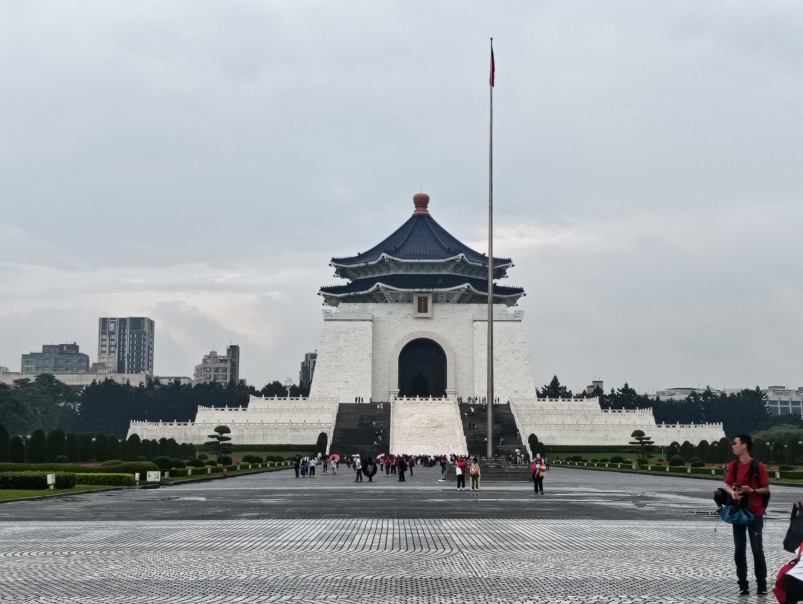
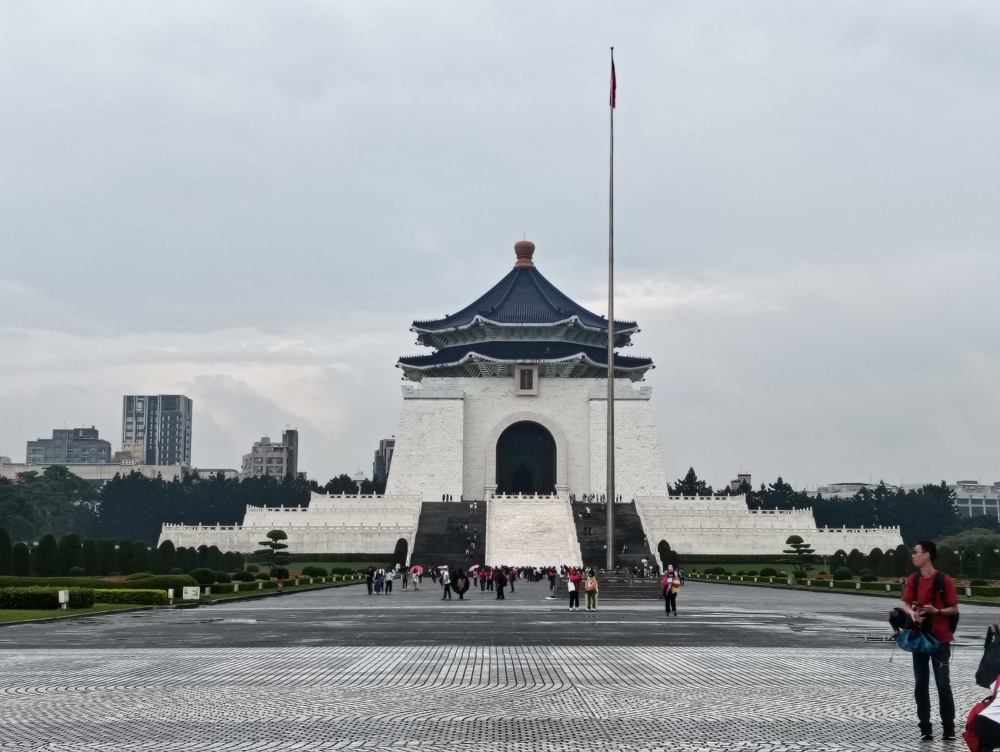

Bangunan National Palace Museum masih sangat terawat dan lengkap dengan artefak dari
suku Chinese, walaupun sudah dibangun sejak tahun 1965.
Pemerintah Taiwan merawat
artefak-artefak tersebut karena nilai benda dan budaya yang tinggi. Museum ini terletak
di Shilin District, dekat dengan kota
Taipei dan mudah dijangkau dengan banyak
transportasi. Salah satu contoh artefak di museum ini adalah artefak batu
berbentuk daging babi. Artefak ini menyimbolkan
bahwa rakyat pada zaman batu
tersebut sangat miskin sehingga hanya bisa makan nasi dengan minyak babi
dan kecap sambil menatap ke patung daging babi tersebut. National
Palace Museum
berperan besar sebagai tempat penampungan terbanyak artefak dari zaman kerajaan Tiongkok.
Orang-orang dari banyak negeri mengunjungi museum ini untuk mempelajari
sejarah Tiongkok.
Karena perlindungan dari pemerintahan, masyarakat Taiwan percaya bahwa
artefak berharga ini akan di lindungi sampai bergenerasi kemudian.
Cijin Island merupakan sebuah pulau yang tidak jauh dari daratan Kaohsiung.
Di pulau ini, ada banyak hal yang bisa dilakukan. Salah satu
cara menuju ke Cijin Island adalah menggunakan ferry.
Penduduk Cijin Island
sering menggunakan ferry untuk bepergian ke daratan Kaohsiung untuk kepentingan pekerjaan.
Di Cijin juga bisa ditemukan sebuah pantai yang banyak dikunjungi turis.
Di sekitar pantai, ada juga penduduk Cijin yang memancing untuk ikan.
Ikan itu lalu mereka jual di pasar. Tempat populer turis yang
lainnya yang ada di Cijin merupakan mercusuar dan reruntuhan
sebuah benteng.
Kedua destinasi turis ini juga membuka beberapa peluang kerja bagi masyarakat penduduk Cijin.
Chiang Kai Sek Memorial Hall dibuat untuk memperingati "Bapak dari Taiwan"
yaitu Chiang Kai Sek. Ketika dia kabur dari China, Chiang Kai Sek
membawa ton-ton emas, artefak, dan juga 70% orang kaya dari China
ke Taiwan. Dia membentuk ulang Taiwan dengan semua itu yang dimilikinya
sehingga Taiwan berkembang menjadi negara yang maju. Tujuan Chiang Kai Sek
melakukan semua itu
adalah dia berusaha mengimplementasikan demokratisme yang ditolak oleh China.
Dengan proses itu, secara tidak langsung dia juga mengintroduksi budaya
Tiongkok kepada masyarakat lokal. Maka dari itu, budaya
Taiwan dan China
memiliki banyak kesamaan.
 
